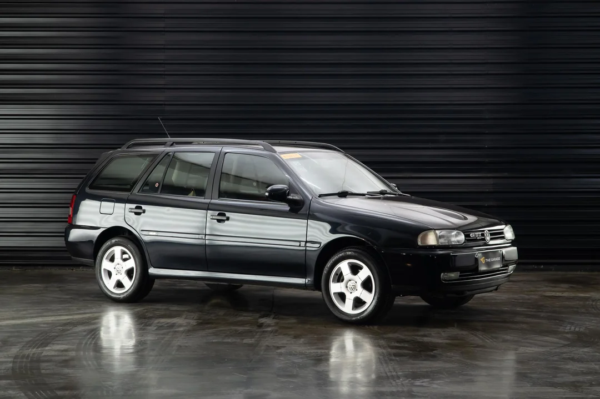

ESPORTIVO
Ficha Técnica
Ano
1997 - 2000
Motor
2.0 | 16V
Potência
145 cv
Câmbio
Manual | 5 marchas
Tração
Dianteira
Carroceria
Station Wagon
Combustível
Gasolina
FIPE
R$ 41.200 ~ R$ 42.300
Uma perua com espírito esportivo.
A Volkswagen Parati GTI unia a praticidade de uma perua com o desempenho de um verdadeiro esportivo. Com motor 2.0 16V, visual marcante e a lendária sigla GTI, conquistou os apaixonados por carros e se tornou um dos modelos mais desejados da Volkswagen nos anos 90.